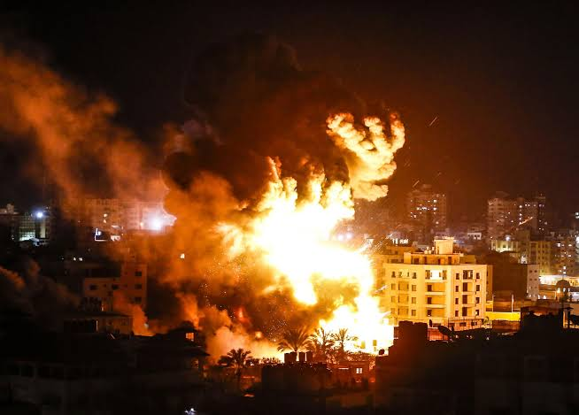
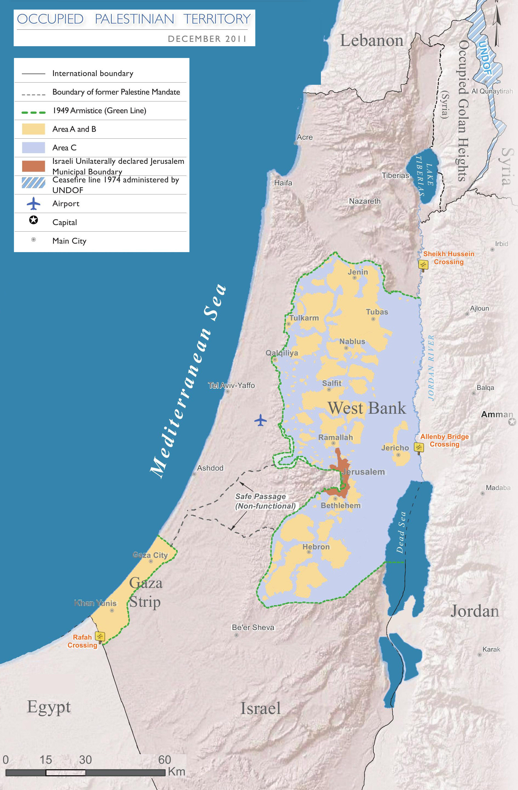

What is Hamas, and what’s happening in Israel and Gaza? A really simple guide
\ The Palestinian militant group Hamas launched an unprecedented attack on Israel on 7 October, with its fighters entering communities near the Gaza Strip, killing at least 1,300 people, and taking scores of hostages.
More than 2,215 people have been killed in Gaza since Israel launched retaliatory air strikes and a ground offensive is also expected.
Follow LIVE : Israel-Gaza war latest updates
What is happening in the Gaza Strip?
- Israel has told everyone in the north of the Gaza Strip - about 1.1 million people - to relocate to the south of the territory within 24 hours, a deadline that has now passed. It wants them to be south of a watercourse known as Wadi Gaza.
- The UN said this is not possible and asked Israel to withdraw the order, warning of "devastating humanitarian consequences".
- The World Health Organization said Gaza's health authorities had told it that it would be impossible to evacuate vulnerable hospital patients.
- Hamas, which controls the Gaza Strip, told civilians to ignore the evacuation order, describing it as "fake propaganda". However, many people have been leaving.
- Women and young children were among many killed when a strike hit their convoy fleeing northern Gaza on one of two evacuation routes.
- Northern Gaza - containing Gaza City and two refugee camps - is one of the most densely populated parts of the territory.
- There is only one main road going south, and fuel for vehicles is running out.
- Hamas's military wing, the al-Qassam Brigades, is continuing to fire rockets into Israel, claiming to have targeted Ashkelon, in the south of country, with 150 of them. 
- Israel's stated goal is to destroy Hamas.
- It has massed tens of thousands of soldiers on its borders with Gaza, along with tanks and artillery
- It has activated some 300,000 reservists alongside its standing force of 160,000.
- The Israeli military has prepared for an offensive by dropping 6,000 bombs on Gaza, targeting Hamas commanders and their control centres.
- One of its main targets is Hamas's vast labyrinth of underground tunnels, which link together its underground command posts.
How could Israel carry out a ground offensive?
Why wasn't the attack foreseen by Israeli intelligence?
- Given the combined resources of the Shin Bet, Israeli domestic security services, its external spy agency Mossad, and all the assets of the Israel Defense Forces, the BBC's security correspondent Frank Gardner says it is astounding that nobody saw this coming or failed to act on it if they did have a warning.
- Israel has arguably the most extensive and well-funded intelligence services in the Middle East, with informants and agents inside Palestinian militant groups, as well as in Lebanon, Syria and elsewhere.
- Israel has arguably the most extensive and well-funded intelligence services in the Middle East, with informants and agents inside Palestinian militant groups, as well as in Lebanon, Syria and elsewhere.
- The barbed-wire topped fence is supposed to have been a "smart barrier" to prevent exactly the sort of infiltration that has taken place in this attack.
- But Hamas militants simply bulldozed their way through it, cut holes in the wire or entered Israel from the sea and by paraglider.